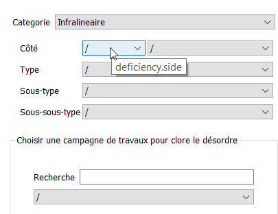
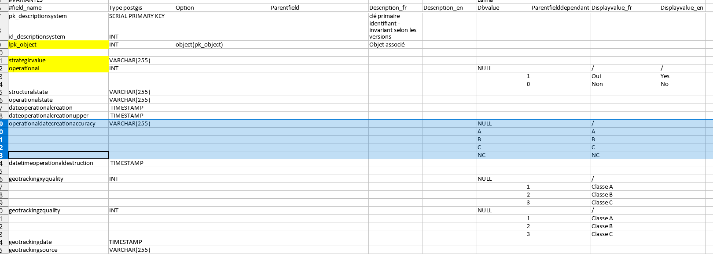
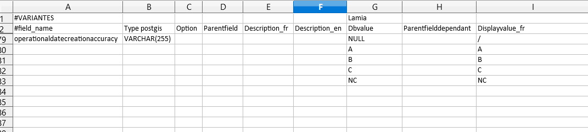

Configuration des valeurs affichées par les menus déroulants¶
Problématique¶
Il peut arriver de vouloir modifier les valeurs dans les menus déroulants. Cette page explique comment modifier ces valeurs.
Fonctionnement de Lamia¶
Les valeurs affichées dans le menu déroulant sont issues d’un fichier libreoffice .ods situé dans le répertoire du plugin Lamia (Répertoire Lamia/config/[nom du type de base de données]/dbase). On peut modifier ce fichier en créant un fichier .ods dans le répertoire du projet (Répertoire du projet/config/dbase).
Les paragraphes ci dessous expliquent comment modifier ces valeurs.
Modification des valeurs¶
1 - identifier les valeurs à modifier
Pour cela, laisser le curseur au dessus du menu déroulant dont on veut modifier la valeur. Un tooltip apparaît avec [nom de la table].[nom du champ] Il faudra donc modifier le champ [nom du champ] de la table [nom de la table].
2 - Ouvrir le fichier .ods du plugin Lamia
Pour y accéder, aller dans la barre de menu Lamia/Préférences/Open Lamia directory.
Ce lien ouvre le répertoire du plugin Lamia. Aller ensuite dans le sous-répertoire Lamia/[type_de_votre_base_de_données]/type_de_votre_base_de_données Ouvrir le fichier .ods se terminant par la version la plus récente (p.ex le fcihier base3_levee_0_1 correspond à la version 0.1 et base3_levee_0_3 correspond à la version 0.3 - ouvrir donc ce dernier).
On observe un fichier .ods avec des onglets nommés [numero]_[nom de la table]. Aller dans l’onglet voulu et chercher le champ voulu dans la première colonne de cet onglet.
3 - Ouvrir le fichier .ods du projet
Pour y accéder, aller dans la barre de menu Lamia/Préférences/Open Project directory
Ce lien ouvre le répertoire du projet en cours. Aller ensuite dans le Répertoire du projet/config/dbase. Ici se trouve un fichier .ods. L’ouvrir.
On trouve un onglet nommé XX_tablename.
Le renommer du même nom que l’onglet du de l”.ods du plugin Lamia.
4 - Copier/coller les valeurs du .ods du plugin vers le .ods du projet.
D’abord, copier les lignes du .ods du plugin correspondant au champs voulu et les coller dans le .ods du projet.
Attention : copier toutes les lignes à partir du nom du champ jusqu’au nom de champ suivant.
5 - Personaliser les valeurs du champ
Modifier les valeurs comprises dans la colonne Dbvalue et Displayvalue_fr.
La colonne Dbvalue correspond à la valeur stockée dans la base de données, et Displayvalue_fr celle affichée dans Lamia.
Attention : si l’on veut une valeur ne stockant rien dans la base de données, mettre NULL dans la colonne Dbvalue.
ex:
6 - (Re)ouvrir le projet avec Lamia et les modifications seront prises en compte !!

{kind=link}
{kind=link}
{kind=link}